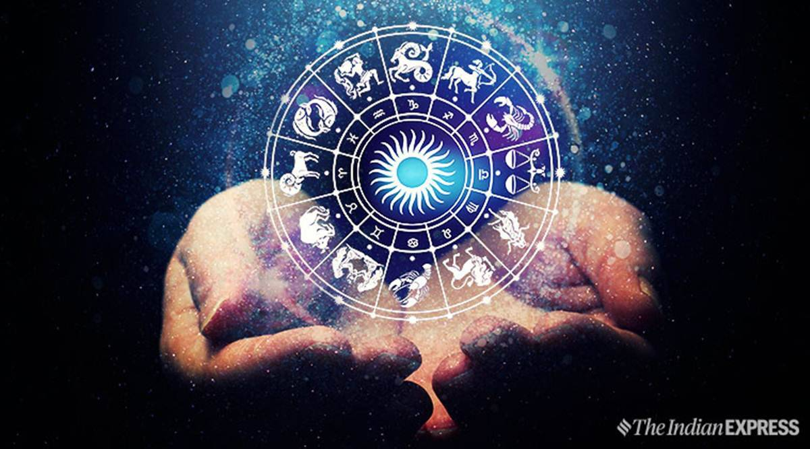

.jpeg)
Created By Shivam Giri(+91-8787213953)
About "कृपा ज्योतिष संसथान"
15 year of experience in "VEDIK JYOTISH". I have been gone through varius aspects of "Jyotish". With wide expertise in this field we serve our clients with Jyotish Solution at our "Krapa Jyotish Sansthan". I make sure that we provide proper solutions to our clients problems so that they go home happily.

God Is Busy So I Can Help You
Problem Solving Astrology
Vedic Astrology
To Get Happiness In Your Life
Fast Astrology Solution
Why are you worry? I am there to help you:
ॐ भूर्भुवः स्वः तत्सवितुर्वरेण्यं भर्गो देवस्यः धीमहि धियो यो नः प्रचोदयात
What I’m good at?
our offered services are rendered to predict the impact of different planetary situations on one’s life and with different remedies. Astrology also known as Jyotish or Jyotisha is the traditional hindu system of astronomy and astrology. These services are highly appreciated by clients for their effectiveness and reliability.
• Astrology & Court Case Problems
• Career & Business Problem
• Marriage & Santan-Prapti

• Love & Vashikaran
• Love Marriage & Teenage Love Problems
• Divorce problem & Family Problems

• Relationship Problem & Disturbed marriage
• Black Magic & Black magic removal

Why we??
Powerful Love Astrologer
Fast Astrology Solution
Family Problem Solve In 24 Hours
Kundli Problem Solution
Our Servises
समस्या का समाधान- • मूक प्रश्न विचार
- • नाडी ज्योतिष संक्षेप में
- • त्रात्मक-सप्तशती
- • वैदिक शिव-पूजा
- • कुंडली बनाना और फ़लादेश करना
- • श्रीगणेश वन्दना
- • मास अयन योग करण
- • पितृदोष और उसके उपाय
- • नजर-दोष (शैतानीं-आंख)
- • समस्या का समाधान
- • बुधशनि का सुख
- • धन आने का समय
- • शक्तिशाली यंत्र
- • मुहूर्त विचार
- • व्यवसाय
- • नौकरी
- • गुरु का राशि-परिवर्तन
- • ज्योतिष का जादू
- • अपनी जन्म पत्री बनाइये
- • तलिस्मान
- • गर्भाधान का निश्चित समय
- • ब्रह्माण्ड विवेचन
- • ईश्वरीय शक्ति से धन
- • राहु का नशा
- • विवाह-मुहूर्त
- • बक्री बुध
- • बक्री शनि
- • लक्ष्मी पूजा (दीपावली)
- • विवाह-योग
- • ज्योतिष में भाव से भाव तक
- • कोर्ट-केश और ज्योतिष
- • नामराशि का प्रभाव
- • जन्म समय हाथ पर लिखा है
- • ज्योतिष से खोयी वस्तु खोजें
- • दैविक कार्य और कलश स्थापना
- • विवाह और सातवां भाव
- • केतु की औकात
- • धन प्राप्ति के लिये कुबेर साधना
- • मनपसन्द सन्तान की प्राप्ति
- • ग्रह और बीमारियाँ
- • व्यवसाय में फ़लदायी मंत्र
- • मंत्र चिकित्सा से लाभ
- • नागदेवता का प्रभाव
- • शुक्र का असर भरपूर
- • वास्तु और सुखीजीवन
- • शनि देव के जाप और मंत्र
- • सम्पूर्ण जन्म कुन्डली की विवेचना
- • नारद पुराण कृत वास्तु
- • केरलीय रीति से प्रश्न विचार
- • लक्ष्मी का कारक शुक्र
- • सूर्य राज्य का कारक
- • राहु यानी रूह ही रोके राह
- • मंगली दोष की सीमा
- • नाडी ज्योतिष में नाडियों के अंश
- • ज्योतिष से धन
- • भारत के प्रति भविष्य वाणी
- • अपना भविष्य जानिये
- • ज्योतिष से ग्रह उपचार
- • जन्म समय से विवेचन
- • जन्म कुन्डली
You can learn here: